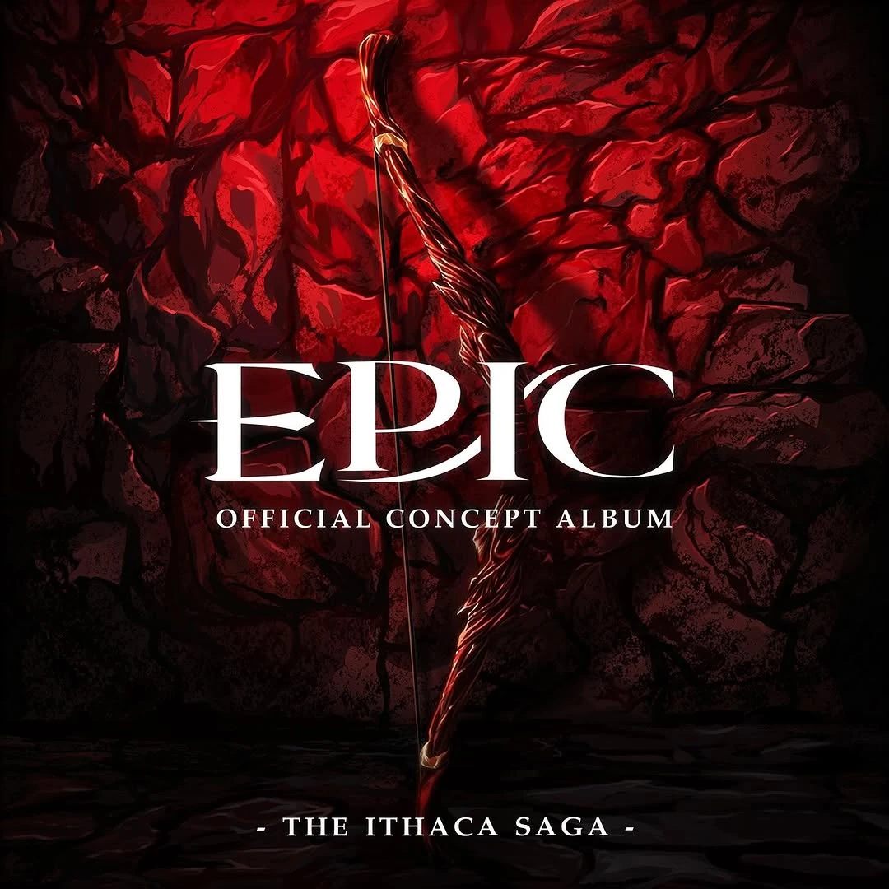

| Haltet sie | |
|---|---|
|  | |
| Song Information | |
| Song Nr. | 37 |
| Akt (Saga) | Akt 2 (Ithaka Saga) |
| Gesungen von: | ... |
| Epic: German Ensemble | |
| Charaktere | Antinoos |
| Die Freier | |
| Übersetzt von | Mike Hinterlechner |
| Chronologie | |
| Vorheriger | Die Challenge |
| Nächster: | Odysseus |
Haltet sie
Haltet sie ist der zweite Song der Ithaka Saga. In diesem Song entscheidet Antinoos, dass er und die Freier genug darauf gewartet haben, dass Penelope einen Ehemann wählt, und planen die Dinge selbst in die Hand zu nehmen.
Songtext
Trigger Warnung
Dieser Song enthält Anspielungen auf Mord und sexuellen Missbrauch
| Original Text | Deutscher Text |
|---|---|
|
[FREIER]
Whoever can string the old king's bow And shoot through twelve axes cleanly Will be the new king, sit down at the throne Penelope as his queen Where is he? Where is the man who can string this bow? Woah... [ANTINOOS] Screw this competition, we've been here for hours None of us can string this, we don't have the power Screw this damn challenge, no more delays Can't you guys see we're being played? This is how they [ANTINOOS, FREIER] Hold us down while the throne gets colder Hold us down while we slowly age Hold us down while the boy gets bolder Where the hell is our pride and our rage? Here and now, there's a chance for action Here and now, we can take control Here and now, burn it down to ashes Channel the fire inside your soul [ANTINOOS] Haven't you noticed who's missing? Don't you know the prince is not around I heard he's on a diplomatic mission And I heard today he comes back to town, so I say we gather near the beaches I say we wait 'til he arrives Then, when he docks his ship, we can breach it Let us leave now, today we can strike and [ANTINOOS, FREIER] Hold him down 'til the boy stops shaking Hold him down while I slit his throat Hold him down while I slowly break his pride, his trust, his faith, and his bones Cut him down into tiny pieces Throw him down in the great below When the crown wonders where the prince is Only the ocean and I will know [ANTINOOS] And when the deed is done The queen will have no one to Stop us from breaking her bedroom door Stop us from taking her love and more [ANTINOOS, FREIER, ALLE] And then we'll Hold her down while her gate is open Hold her down while I get a taste Hold her down while I share her spoils I will not let any part go to waste Here and now, there's a chance for action chance for action Here and now, we can take control take control Here and now, burn it down to ashes Channel the fire inside your soul and Hold them down! Hold them down! Hold them down! Hold them down! [ANTINOOS wird von ODYSSEUS erschossen] |
[ANTINOOS] Ist's euch noch nicht aufgefallen Wisst ihr nicht der Prinz ist nicht im Land Anscheinend ist er auf Regenten-Kram Missionen Und ich hab gehört er kommt heut nach Haus und Ich schlag vor, wir treffen uns am Strand Ich schlag vor, wir warten bis er kommt Wenn er anlegt könn'n wir ihn ergreifen Lass uns jetzt gehen, heut könn'n wir zuschlagen [ANTINOS, FREIER] Haltet ihn bis sein Zittern aufhört Haltet ihn wenn ich ihn erleg Haltet ihn denn ich brech sein Vertrau'n, seinen Stolz uns so viele Knochen Schneidet ihn in kleinste Stücke Werft ihn ins Meer und dann Wenn die Krone fragt wo der Prinz ist Wissen's nur ich und der Ozean |
Trivia
- Antinoos' Pläne für Telemachos beziehen sich darauf, wie in der griechischen Mythologie das Entfernen eines Gliedes einer Person auch dieses Glied aus ihrer Seele entfernt, wenn sie stirbt. So ist es möglich, dass eine vollständige Zerstückelung dem Opfer den Eintritt in die Unterwelt verhindert.
- Als Antinoos erzählt, was er mit Penelope vor hat, kann man eine Bratsche (ihr Instrument) leicht im Hintergrund hören.
-
Im März 2023 veröffentlichte David Ing eine Parodie von dem Song, genauer gesagt von der Strophe in der
Antinoos und die Freier planen Telemachos zu ermorden. In der Parodie plant Antinoos aber Telemachos mit
einer Geburtstagsparty zu überraschen. Die Parodie wurde schnell ein Insider im gesammten Fandom.
- Das Video von der Parodie wurde von Gigi animiert, die später von Jorge selbst viele aufträge bekam.